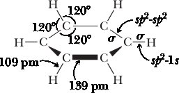
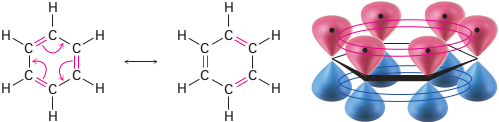
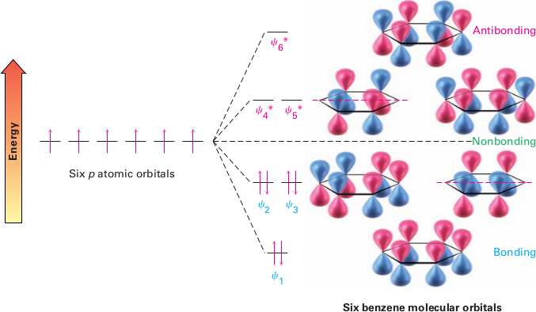

The Molecular Orbital Model of Benzene
Il benzene si presenta come una molecola planare con la geometria di un esagono regolare, con legami C-C-C e H-C-C, ed angoli di legame di 120°. Per questo tipo di legami, il carbonio utilizza orbitali ibridi sp2. Ciascun carbonio forma legami σ con due atomi di carbonio adiacenti per sovrapposizione di orbitali ibridi sp2 ed un legame σ con l'idrogeno per sovrapposizione dell'orbitale ibrido sp2 del carbonio con quello 1 s dell'idrogeno. Come determinato sperimentalmente, tutti i legami carbonio-carbonio sono di lunghezza pari a 139 pm, un valore quasi intermedio tra quello di un legame semplice tra atomi di carbonio ibridizzati sp3 (154 pm) e di un doppio legame tra atomi di carbonio ibridizzati sp2 (133 pm).
Ciascun carbonio ha anche un orbitale non ibridizzato 2p perdendicolare al piano della molecola, contenente un elettrone. Tale orbitale p si sovrappone equamente bene con entrambi gli orbitali p degli atomi di carbonio adiacenti; la sovrapposizione contigua degli orbitali p fa sì che i sei elettroni del benzene siano delocalizzati all'interno dell'anello e libersi di muoversi in esso. A causa della delocalizzazione degli elettroni il benzene è più stabile e meno reattivo rispetto agli alcheni.
Secondo la teoria degli orbitali molecolari, la combinazione dei sei orbitali 2p origina sei π MOs, tre π-bonding MOs, and three p-antibonding MOs. La Figure 2 mostra i 6 orbitali molecolari e le energie relative. Si noti che π2 e π3 MOs sono leganti e degeneri (hanno stessa energia). Similmente, π*4 and π*5 are a degenerate pair of π-antibonding MOs. In the ground-state electron confi guration of benzene, the six electrons of the p system occupy the three bonding MOs. According to molecular orbital calculations, the great stability of benzene results from the fact that these three bonding MOs are much lower in energy when compared with the six uncombined 2p atomic orbitals.
